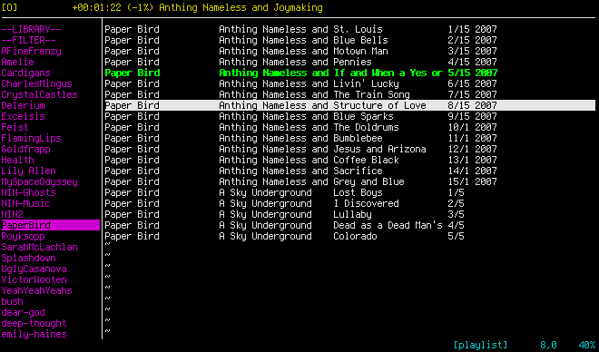

vitunes
Play your tunes and create/manage playlists with a vi-like
interface
[description]
[features]
[documentation]
[download]
Description
vitunes is a curses-based playlist manager and media player
for *nix operating systems with vim-like
keybinds. It's primary goal is to serve as an index of "tagged" multimedia
files and provide a quick, easy interface for browsing & searching your
files, and creating playlists.
It is similar in function to a certain graphical program used by
many on other operating systems. vitunes works by extracting the
meta-information from media files and storing them in a central database,
forming a "Library" from which you can play your music and build playlists.
vitunes uses mplayer as a
back-end for actually playing all media.
NOTE: vitunes is still under heavy development. None-the-less,
it's reached a point where it's usable for others who may care to try it.
NOTE: vitunes is developed on
OpenBSD and only OpenBSD. As such, there
are (probably) many OpenBSD-isms in the code that would prevent it from
building and/or running on other *nix-like OS's. Cope.

Features
vitunes...
- never moves / modifies your media files in any way
- never creates / modifies / deletes any files outside of
~/.vitunes
- uses mplayer to play media,
so it can play anything mplayer can
- allows creating / managing playlists in a fast, vi-like
fashion
- allows searching your library and playlists based on meta-information
from the media files in the database
vitunes can extract meta-information from the following files:
vitunes is NOT...
- a media meta-information editor (you can't edit ID3 tags, vorbis
comments, etc., from within vitunes). Use other tools
for that.
- a media-file organizer. it leaves your files wherever you have
them, untouched. It requires only read access to the files to
extract meta-information and play the file through mplayer.
- a full-featured, fancy-shmancy media player. It's a playlist
organizer at best, that can play music.
Documentation
1. Quick Overview ← READ THIS FIRST!
vitunes works by first building a meta-information database, which
is a database containing all media files and their meta information
(artist, album, title, track number, year, genre, and playtime). This
database forms the "LIBRARY" which is all of the media files
vitunes is capable of playing and working with.
- ∴ IF a media file is NOT in the library,
THEN that file will NOT appear within vitunes!
This database is built using "vitunes -e createdb ...", and as
you add/remove/modify any of your media files, you can update the
database using "vitunes -e updatedb ...". See
§ 3. Building & Updating the Library
for details.
After the library has been created, vitunes can be run normally
(simply "vitunes"), and you can browse your library, search it,
create & manage playlists, etc.
The database vitunes builds and uses is stored in the file
~/.vitunes/vitunes.db. Additionally, the playlists it
creates/manages are all stored in the directory
~/.vitunes/playlists/. These are created when the library
database is first created.
NOTE: It's important to remember that when you build/update your
library, only files with meta information (ID3v* tags, vorbis comments,
or MP4/AAC comments) are recorded. Any other media files are simply
ignored.
- ∴ IF you want a media file (song/video) in the library,
THEN that file must have some meta information.
2. Building & Installing
vitunes requires the following libraries to be installed to build:
Additionally, to have vitunes actually play music,
mplayer must be installed
(OpenBSD package name: mplayer).
After these are installed, a simple
# make
# make install
should build and install vitunes.
3. Building & Updating the Library
Before vitunes will run, you must build the meta-information
database containing all of the meta-information of the media files you want
to be able to play in vitunes. To do this, do the following:
# vitunes -e createdb /path/to/music1 [ /path/to/music2 ... ]
This will recursively search all the paths provided and for each file
encountered, vitunes will attempt to extract any meta-information.
If such information is found, the file's information is added to the database
~/.vitunes/vitunes.db.
Additionally, whenever you add/remove/update your media files, you can run
# vitunes -e updatedb [ /path/to/moremusic1 ... ]
to have vitunes update its database (re-scan all files currently
in the database to see if the meta information has changed and remove any
entries for files that have been removed), and even add new directories
(searched recursively) to the library.
IMPORTANT NOTE: only files for which some meta information is
found are added to the library. All others are skipped.
You can parse the output of the createdb and updatedb
commands easily to see which files were added or not.
For a list of all e-commands vitunes has, run
# vitunes -e help
For more information on a specific e-command and its usage, run
# vitunes -e help command
4. Running vitunes Normally
Once you have created the database above, you can run vitunes
normally by simply
# vitunes
This will launch a curses-based interface similar to what you see in the
screenshot on this page.
What follows next are descriptions of the user interface, the
key-bindings, and commands available in "command-mode" for altering the
state of vitunes.
4.1. The User Interface
The user interface is divided into 4 sections, which are in different colors
in the screenshot below:

- Play Window The top row (colored
yellow
above)
This window provides information on the currently playing file, if any.
If no file is currently playing, the window is empty except for a
shameless shout-out to vitunes in the right.
If a file is playing, then the following information is displayed:
- A play-mode character, which is one of:
- "-" for linear mode (files in the playlist
are played in-order until the end of the playlist is
reached).
- "O" for loop (like linear, only once the
end of the playlist is reached, playing resumes with the
first file in the playlist).
- "?" for random (where files from the
playlist are chosen at random to be played).
The default is loop.
- A pause-indicator, which is the string
"[PAUSED]" if playback is currently paused, and
empty otherwise.
- The time into the current file which is in the format
"hh:mm:ss".
- The position into the current file as a percent, if
the total playlength of the file is available, -1 otherwise.
- The Title of the current file if available, otherwise
as much of the filename as will fit in the window.
- Command Window The bottom row (colored
cyan
above)
This window serves two purposes.
When not in command mode it provides the following information
about the vitunes interface.
- The currently focused window (one of either
"[playlist]" or "[medialist]" is
displayed.
- The vertical and horizontal offsets are displayed as
the pair "i,j" where i is the
line number of the currently selected row in either the playlist
or medialist window (whichever has focus), and j
is the amount of horizontal scrolling used (again, for either the
playlist or medialist window, whichever has focus).
- The vertical percent into the current buffer (playlist or
medialist window), which is basically the current row number
divided by the total number of rows times 100.
When in command mode, the command window is cleared and commands may
be entered to alter vitunes (e.g. the command
":q" is used to exist vitunes).
- Playlist Window The left-window (colored
magenta
above)
This window always shows a list of all playlists available, loaded
from the ~/.vitunes/playlists/ directory when vitunes
starts.
The first two entries are always shown and are pseudo-playlists.
They are:
- "--LIBRARY--" which is the database of all songs
in the vitunes meta-information database.
- "<search results>" which is a playlist
built/destroyed every time a search of any playlist is performed.
- Medialist Window The right-window row (colored
white
above)
This window always shows the contents of whatever playlist was
selected for viewing. The information shown for each file is all of
the meta-information available. If no information is available, the
filename is shown instead.
4.2. Key Bindings
The following key-bindings are used to interact with vitunes.
They should be familiar to any vi/vim users.
- TAB
- Switch focus between the playlist/medialist windows
- j / k
- Move current row (highlighted) down/up one row (works in both playlist
and medialist windows)
- h / l
- Horizontal scroll left / right one character (works in both playlist
and medialist windows)
- CTRL-u / CTRL-d
- Scroll up / down 1/2 page (works in both playlist and medialist
windows)
- ENTER
- If focus is in the playlist window, this loads the currently selected
playlist in the medialist window.
If focus is in the medialist window, this plays the current file.
- z
- Pause/un-pause current playback (works in either playlist or medialist
windows).
- s
- Stop current playback (works in either playlist or medialist
windows).
- f / b
- Skip forward / backward 10 seconds in playing of current file (works
in either playlist or medialist windows).
- yy
- If focus is in medialist window, copies ("yanks") current file to
copy-buffer. If focus is in playlist window, does nothing.
Use of "yX" will work as in vim (i.e. it will
copy the next X lines).
- dd
- Delete current playlist (if focus is in playlist window) or current
file (if focus is in medialist window).
Use of "dX" will work as in vim (i.e. it will
delete the next X lines).
- p / P
- Paste any file(s) in the copy-buffer before / after the current
row in the current playlist. Only works when focus is on medialist
window.
- CTRL+l
- Clear and re-draw the entire screen.
- "/"
- Start searching the currently viewing playlist. The query entered
is first tokenized, and all entries in the current playlist that match
all tokens (case-insensitive) are displayed. These search
results form the pseudo-playlist "<search results>", which can
be saved as a regular playlist using ":w name".
- ":"
- Enter command-mode (see below for commands).
4.3. Command Mode
Similar to command mode in vi/vim, vitunes command mode allows you
to execute various commands. This is a list of all such commands.
- :q
- Exit vitunes
- :w[!] [name]
- Use ":w" to save the current playlist being viewed in
the medialist window. Use ":w name" to save the
playlist as "name" instead. If a playlist with the given name already
exists, use ":w! name" to force.
NOTE: You cannot save the "--LIBRARY--" or "<search-results>"
pseudo-playlists, since they do not actually exist as playlists.
You can save them as a new playlist, however, using
":w name".
- :new playlist
- Create a new, empty playlist
- :mode [ linear | loop | random ]
- Set the current playmode to one of linear (all files in the playlist
are played in the order they appear, until the end of the playlist is
reached), loop (like linear, but playing of the playlist loops
indefinitely), or random (where files from the playlist are played in
a random order).
Appendix A. F. A. Q.
- What license is vitunes distributed under?
- That's a good question, and I'm still trying to figure it out.
The libmp4v2 dependency has some rather strict licensing.
I'm still investigating what license vitunes needs to be
under.
more is forthcoming
Appendix B. TODO.
Before the "1.0" release, the following will be finished...
- much more testing to flush out the bugs that no-doubt inhabit
vitunes.
- ADD: runtime ability & command line switch to set/change playlist
width
ADD: support for resizing display!
It now works beautifully with
scrotwm(1)!
- ADD: ability to sort files in medialist by user specified order
- ADD: ability to change listing format for media
- ADD: ability to change colors
- ADD: a config file! wooooo!
- FIX: get genre's from mp4/aac audio files.
(I think this is a bug in the mp4 library, where it sometimes returns a
pointer to static memory rather than malloc(3)'d memory... I think when
it's an ID3v1-style genre).
- FIX: get playtime from mpeg (including mp3) files.
FIX: createdb function works, but updatedb is currently
un-implemented.
FIX: backspace/delete/left stuff when user inputs a string- FIX: redraws are currently very expensive... anytime anything changes
in a window, the entire thing is re-drawn.
- FIX: remove all (or most) statically-sized arrays.
UPDATE: Only playlists are now statically sized (to 1,000 songs).
ADD/FIX: the help switch output- ADD/FIX: the man pages
- ADD/FIX: this website
- FIX: Respect style(9)
Download
Remember that vitunes is still under heavy development.
None-the-less, it's now reached a point where it's usable should someone
want to give it a try.
If you encounter problems, please first read the documentation above and then
email me.
Copyright (c) 2009 Ryan Flannery <ryan.flannery@gmail.com>